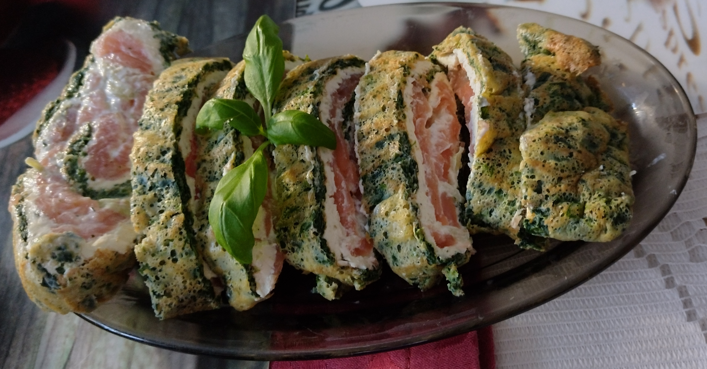

Spinatroulade mit Lachs und Frischkäse
3h
Intermediate
15.10.2025
3h
Intermediate
15.10.2025
| Für den Spinatteig: | |
|---|---|
| 450 | g gefrorener Spinat (oder ca. 200 g frischer Spinat) |
| 4 | große Eier |
| 3 | Esslöffel Weizenmehl (oder Mais-/Kartoffelstärke) |
| 2 | Knoblauchzehen |
| 1/3 | Teelöffel Muskatnuss |
| Salz und Pfeffer nach Geschmack | |
| Für die Füllung: | |
| 300 | g Frischkäse (z.B. Naturfrischkäse, Philadelphia-Typ) |
| 100 | g geräucherter Lachs in Scheiben |
| Eine Handvoll frischer Dill | |
| Salz und Pfeffer nach Geschmack | |
Vorbereitung: 1 Stunde
Zubereitung: 2 Stunde